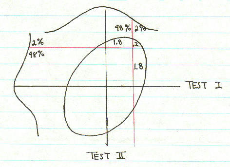

On using multiple tests for high IQ society admissions
from a letter to me by Grady Towers
Used with permission from the author
Most high IQ societies advertise that they select their members at a certain percentile level from the general population: the top two percent for Mensa, the top one percent for Intertel, the top one-tenth of one percent for ISPE and Triple Nine, and so on. None of which is true. It could only be true if they used one and only one test for selection purposes, or if they used tests that correlated perfectly with one another. In fact, two or more tests are almost always used. As the best conventional IQ tests correlate about 0.7 with each other, this leads to some interesting statistical consequences.
Assume that there is a high IQ society that uses two, and only two, IQ tests for selection. Assume both tests are highly reliable, properly scaled, and correlate 0.7. Assume the society wants to select out the top two percent from the general population. Here's what they would get:
1.8 percent would pass one test but not the other.
3.83 percent would pass one test or the other (or both)
0.2 percent would pass both tests.
These are percentages for the general population. For those who have already passed one test, only 10.27 percent will pass the second.
These numbers usually come as a surprise to most people. Because a society that gives two tests and allows admission if a candidate passes either one is actually selecting the top 3.83 percent, this is equivalent to giving a test with super-high reliability and selecting at an IQ of 129 or above, rather than 132 (on a 16 sigma scale).
Had the society instead required the candidate to pass both tests at the two percent level, it would have been equivalent to using a super-high reliability test to select at 146 IQ.

This may be surprising at first, but it's not too difficult to believe after you've studied the scattergram. However, there's a consequence to this that is hard to believe, one that someone in your position ought to know about.
This time we again have two tests that correlate 0.7, but we now have two societies. One society selects at the two percent level, and the other at the one-tenth-of-one percent level. Here's what we get this time:
For the general population
2.11 percent would pass one test or the other or both
0.014 percent would pass both tests (roughly one in seven thousand)
For those that passed one test at the two percent level, only 0.69 percent would pass at the one-in-a-thousand level. That's not much of a surprise. But here's the kicker, the thing you should know. Only 13.48 percent of those who passed at the one-in-a-thousand level would pass at the two percent level.
Most members of very high level IQ societies (> 150) are or have been Mensans already. They belong in the category of individuals who have passed both tests. But people who take a test like the Mega Test in a public magazine like Omni, and equal or exceed 150, may not be able to get into Mensa. About 86 percent would fail on a second test at the two percent level.
I find this astonishing. By extrapolation, it means that even some members of the Mega Society couldn't get into Mensa on a second test.
References:
"Graphs for bivariate normal probabilities" Annals of Mathematical Statistics 31 (1960), 619-624.
Return to the Uncommonly Difficult I.Q. Tests page.